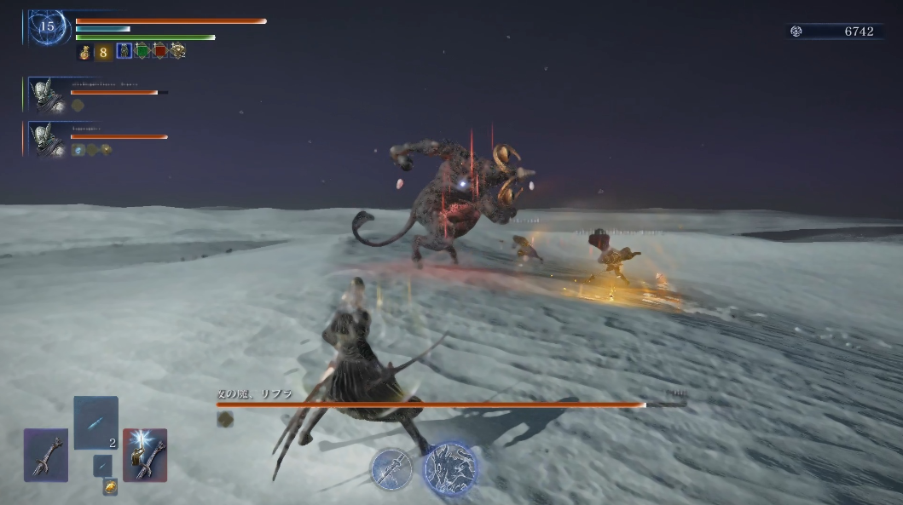
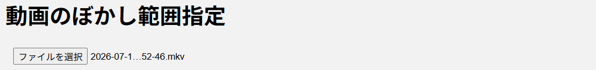
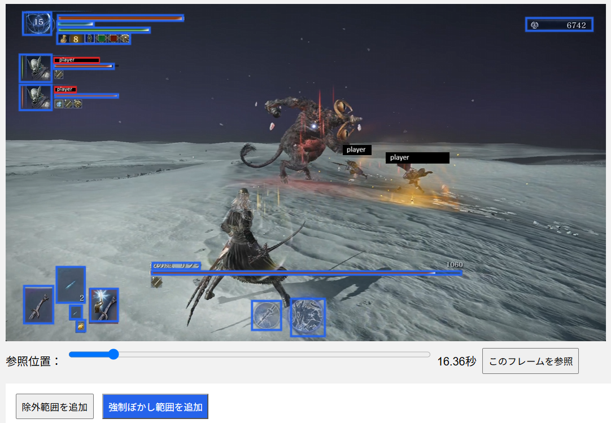
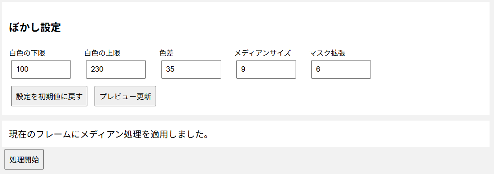

Video Blur Toolとは？
Video Blur Toolは、動画の中にある白色部分を自動的に検出し、 指定した範囲にメディアンフィルタによりぼかしをかける Webアプリケーションです。
オンラインゲームのプレイヤーネームなど、 白色で表示される文字を隠す用途を想定して開発されています。

エルデンリング ナイトレイン
動画をブラウザで読み込み、処理前のプレビューを確認してから ぼかし処理を実行できます。
主な機能
- MP4・MKV動画の読み込み
- 動画内の白色部分の自動検出
- メディアンフィルタによるぼかし
- 白色判定の調整
- ぼかしをかけない除外範囲の指定
- 強制的にぼかす範囲の指定
- 指定した枠をクリックして削除
- 処理前のプレビュー
- 処理状況のプログレスバー
- 元動画の音声を保持
- 処理後の動画の再生・保存
動作環境
以下のソフトウェアが必要です。
| 項目 | 必要なもの |
|---|---|
| OS | Windows、Linuxなど |
| Python | 3.10以降 |
| FFmpeg | インストールおよびPATHの設定が必要 |
| ブラウザ | Chrome、EdgeなどのWebブラウザ |
使用しているPythonパッケージ
- Flask
- OpenCV
- NumPy
インストール方法（Windows）
ここでは、WindowsにVideo Blur Toolをインストールする手順を説明します。
Step 1：Pythonをインストールする
まず、Pythonをインストールします。
- Pythonの公式サイトを開きます。
- Windows用のPythonをダウンロードします。
- ダウンロードしたインストーラーを実行します。
- インストール画面で Add Python to PATH にチェックを入れます。
- Install Nowをクリックします。
インストールが終わったら、コマンドプロンプトを開き、 次のコマンドを実行します。
python --versionPythonのバージョンが表示されれば、インストール完了です。
Step 2：FFmpegをインストールする
Video Blur Toolでは、動画の読み込みや出力にFFmpegを使用します。
- FFmpegをダウンロードします。
- 任意の場所に展開します。
- FFmpegの実行ファイルがあるフォルダーをPATHに追加します。
設定後、コマンドプロンプトで次のコマンドを実行します。
ffmpeg -version続けて、次のコマンドも実行します。
ffprobe -versionバージョン情報が表示されれば、FFmpegの設定は完了です。
コマンドプロンプトから、FFmpegなどのプログラムを フォルダー名を指定せずに実行できるようにする設定です。
Step 3：リポジトリをダウンロードする
GitHubからVideo Blur Toolのプログラムを取得します。
方法A：ZIPファイルでダウンロードする
- GitHubページを開きます。
- 緑色のCodeボタンをクリックします。
- Download ZIPを選択します。
- ダウンロードしたZIPファイルを展開します。
方法B：Gitを使ってダウンロードする
Gitをインストール済みの場合は、次のコマンドでも取得できます。
git clone https://github.com/omesoftwarelab/video-blur-tool.git
cd video-blur-toolStep 4：必要なPythonパッケージをインストールする
コマンドプロンプトを開き、Video Blur Toolのフォルダーへ移動します。
そのフォルダーで、次のコマンドを実行します。
pip install -r requirements.txtFlask、OpenCV、NumPyなどの必要なパッケージがインストールされます。
requirements.txtがあるフォルダーで
コマンドを実行してください。
Step 5：Video Blur Toolを起動する
Windowsの場合
Video Blur Toolのフォルダーにある
run.batをダブルクリックします。
または、コマンドプロンプトから次のコマンドを実行します。
python app.py起動後、Webブラウザで次のアドレスを開きます。
http://127.0.0.1:5000Video Blur Toolの画面が表示されれば、起動完了です。
基本的な使い方
Video Blur Toolでは、動画を読み込み、ぼかし範囲を設定してから 動画を処理します。
1. 動画を選択する
Video Blur Toolをブラウザで開き、 動画ファイルを選択します。
対応形式は主にMP4とMKVです。

2. プレビューを確認する
動画が読み込まれると、最初のフレームが自動的に表示されます。
白色部分の検出結果を確認し、必要に応じて設定を調整します。
3. ぼかし範囲を指定する
次の2種類の範囲を指定できます。
除外範囲を追加
白色部分として検出された場所でも、 ぼかしをかけたくない範囲を指定します。
強制ぼかし範囲を追加
白色として検出されなかった場所でも、 必ずぼかしをかけたい範囲を指定します。
ボタンを選択したあと、動画上をマウスでドラッグして 範囲を指定します。

4. ぼかしの設定を変更する
白色検出の設定などを調整します。
設定を変更した場合は、 プレビュー更新を押して結果を確認します。

5. 動画の処理を開始する
設定が終わったら、処理開始を押します。
処理中はプログレスバーで進行状況を確認できます。
6. 完成した動画を確認・保存する
処理が完了したら、 完成動画を開くから動画を確認します。
問題がなければ、ブラウザから動画を保存できます。
ぼかし設定の説明
白色検出
動画の各フレームから白色部分を検出し、検出された範囲にぼかしをかけます。
次の項目を調整できます。
- 白色の下限
- 白色の上限
- 色差
白色の文字が検出されない場合や、不要な場所まで検出される場合は設定を調整してください。
除外範囲
白色として検出された場所でも、指定した範囲にはぼかしをかけません。
ぼかしたくない白色の文字や画面表示がある場合に使用します。
強制ぼかし範囲
白色として検出されなかった場所でも、指定した範囲にはぼかしをかけます。
自動検出されない文字やオブジェクトを隠したい場合に使用します。
ぼかし方式
| 方式 | 説明 |
|---|---|
| メディアンフィルタ | 検出した白色部分を、周辺画素の中央値を利用して処理した画像の画素に置き換えます。 |
よくある質問・トラブル対策
Q. Pythonが見つからないと表示される
Pythonがインストールされているか確認してください。 また、インストール時に「Add Python to PATH」に チェックを入れたか確認してください。
python --versionQ. FFmpegが見つからないと表示される
FFmpegがインストールされているか確認し、 PATHが正しく設定されているか確認してください。
ffmpeg -version
ffprobe -versionQ. 動画の処理に時間がかかる
動画の長さや解像度によって処理時間は変わります。 高解像度・長時間の動画では、処理に時間がかかる場合があります。
Q. ぼかしたくない場所までぼかされる
白色検出は、映像の内容によって結果が変わります。 白色判定の設定を調整するか、除外範囲を指定してください。
Q. ぼかしたい場所が検出されない
強制ぼかし範囲を追加して、対象の場所を手動で指定してください。
Q. 元動画の音声はどうなる？
元動画の音声は保持されます。 処理後の動画で音声を確認してください。
Q. 処理した動画はどこに保存される？
処理後の動画は、アプリの出力先に保存されます。 ブラウザの「完成動画を開く」から確認・保存できます。
注意事項
- 白色検出は映像の内容によって結果が変わります。
- 自動検出によって、意図しない場所にぼかしがかかる場合があります。
- 処理前にプレビューを確認してください。
- 大きな動画や長時間の動画は、処理に時間がかかる場合があります。
-
tmpやoutputsには動画処理用のファイルが保存されます。 - 元動画は処理前にバックアップしておくことをおすすめします。
ソースコード・ライセンス
Video Blur ToolのソースコードはGitHubで公開されています。
https://github.com/omesoftwarelab/video-blur-tool
ライセンス：MIT License